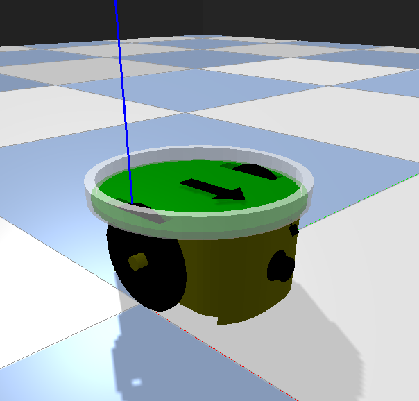
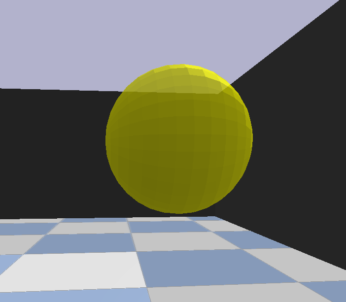
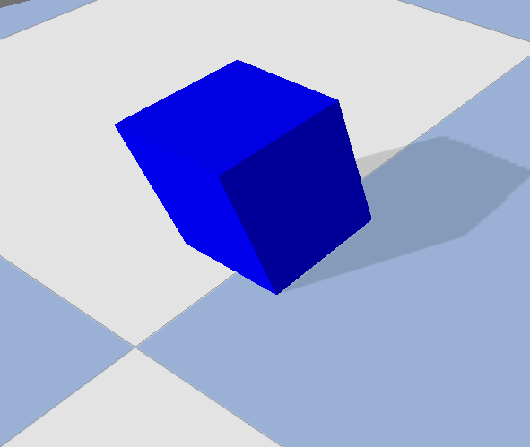

Tutorials¶
Worlds¶
Entities¶
Entities are any kind of world objects that are created in the world or environment space. Jointly with the physics and render engine, they
define the variety experiments to be carried out. Every entity defined in the simulator inherits from the class spike_swarm_sim.objects.world_object.WorldObject.
This base class cannot be directly instantiated and defines a set of abstract properties of entities. Even thought their names are descriptive, the
following table defines the currently implemented entity properties:
Property |
Description |
tangible |
Whether the object has collisions or not. |
static |
Whether the object is static or can move. |
luminous |
Whether the object emits light or not. |
controllable |
Whether the object has a controller or not. |
trainable |
Whether the object controller can be trained (not really used yet). |
Additionally, on top of WorldObject, WorldObject2D and WorldObject3D are built. These classes inherit from WorldObject
and particularize the entities for 2D and 3D simulations. For the moment, 3D objects inherit from WorldObject3D and 2D entities inherit from WorldObject2D.
Nonetheless’, this implementation is temporal and, in future versions, it is expected that any entity will be decoupled from the type of physics and graphics it employs in
a simulation. In this way, WorldObject2D and WorldObject3D would be removed and only WorldObject would act as base class.
Todo
Several objects (robot, light_source, etc) have two classes devoted to 2D and 3D physics and graphics. This implementation is temporal until the 2D/3D standardization is fulfilled. The aim is that there is a single class for each entity and it is the physics engine the responsible for loading and executing the correct object model, physics and graphics.
The entities that are currently implemented in the simulator are gathered in the following table:
Entity Name |
Python Class |
Description |
Image |
robot/robot3D |
Robot/Robot3D |
 |
|
light_source |
 |
||
wall |
|||
ground_area |
|||
cube |
 |
||
ball |
|||
epuck |
Epuck3D |
{kind=link}
{kind=link}
{kind=link}
Note
The class Robot and Robot3D are base classes for any simulated robot. Although these classes can be directly instantiated
through the config. files, it is advisable to create a separate class inheriting from them for the precise robot model (epuck, minitaur, hexapod, etc.).
Nonetheless, if instantiated directly, Robot and Robot3D will load the epuck model by default.
Another important aspect about entities is that they are arranged in groups. Groups are useful for several reasons. Firstly, they ease the execution of many operations as a group instead of applying it object by object. The clearest example is the initialization of the position of the entities, allowing the initialization as group, forming an spatial graph, a grid or avoiding object overlapping. Initializers will be treated later in this tutorial. Secondly, they allow the instantiation of homogeneous groups of entities. By homogeneous we refer to the situation in which every entity has the same characteristics, equipment and capabilities. For example, a group would be a swarm of 10 mobile robots with the same controller, sensors and actuators.
Entity creation and modelling¶
There are three different ways to instantiate entities in an experiment: using directly the API, using a configuration dict and
using a configuration file. Even though all of them are equivalent, the third option is much more used in practice for designing and
carrying out robotics experiments. The first and second options are more suitable when building other software on top of this simulator or
using the library inside another program. Hereafter, all of the mentioned options are explained.
Firstly, lets address the first option: instantiating entities using the API. Even though this option is not as useful as the others, it is
important to know it in order to understand the simulator design. There are two main steps in the entity instantiation, which are the entity
creation (calling the class constructor) and its addition and registry within the world.
The following example shows the process of creating two robots and a blue cube:
Example:
>>> # Create controller and define sensors
>>> ctlr1 = BasicObstacleAvoider()
>>> ctlr2 = BasicObstacleAvoider()
>>> for ctrl in [ctlr1, ctlr2]:
>>> ctlr.add_sensors_from_dict({"distance_sensor3D" : {"n_sectors" : 4, "range" : 1}})
>>> ctlr.add_actuators_from_dict({"joint_velocity_actuator" : {"joint_ids" : [0, 1], "max_velocity" : 13}})
>>> # Create objects instances
>>> robot1 = Epuck3D(np.array([0,0]), 0, controller=ctlr1)
>>> robot2 = Epuck3D(np.array([1,0]), 3.14, controller=ctlr2)
>>> cube = Cube(np.array([2,2]), 0, color='blue', mass=1, side_len=0.2)
>>> # Add objects to world
>>> world.register_entity('swarm_member_1', robot1, group='swarm')
>>> world.register_entity('swarm_member_2', robot2, group='swarm')
>>> world.register_entity('cube_1', cube, group='cubes')
The first steps imply creating the robot controller, which is a basic obstacle avoidance controller, and the activation of the sensors
and actuators. For the moment, lets ignore this steps as they are treated later in this tutorial. Secondly, the robots and the cube are
created using the corresponding Python class (imports not shown in the example). The robots are directly initialized at (0,0) and (1,0) and
with orientations 0 and \(\pi\) radians. The cube is created at (2,2).
The last step is to register the entities in the world. This is accomplished using the register_entity method of the World class.
The arguments are the entity name, the python instance and the group to which it belongs. Notice that the two robots belong to the same group.
The second way of creating entities is using dict objects to gather all the configuration details. Thereafter, once this dictionary has been
created, the method build_from_dict of the class World is used. The configuration details and an explanation of the possible fields can
be consulted at the Configuration Files section. At this point, lets recreate the previous example with two robots
and a blue cube:
Example:
>>> world_cfg = {
>>> "engine" : "3D",
>>> "height": 10,
>>> "width": 10,
>>> "objects" : {
>>> "swarm" : {
>>> "type" : "epuck",
>>> "num_instances" : 2,
>>> "controller" : "basic_obstable_avoider",
>>> "sensors" : {
>>> "distance_sensor3D" : {"n_sectors" : 4, "range" : 1}
>>> },
>>> "actuators" : {
>>> "joint_velocity_actuator" : {"joint_ids" : [0, 1], "max_velocity" : 13}
>>> },
>>> "initializers" : {
>>> "positions" : {"name" : "fixed", "params" : {"fixed_values": [[0, 0], [1, 0]]}}
>>> "orientations" : {"name" : "fixed", "params" : {"fixed_values": [0, 3.14]}}
>>> },
>>> },
>>> "cubes" : {
>>> "type" : "cube",
>>> "initializers" : {
>>> "positions" : {"name" : "random_uniform", "params" : {"low" : [-1, -1], "high" : [1, 2], "size" : 2}}
>>> },
>>> "params" : {"mass" : 1, "side_len" : 0.2, "color" : "blue"}
>>> }
>>> }
>>> }
>>> world.build_from_dict(world_cfg)
The only configuration distinction is that we have already introduced the entity initializers. More precisely, we have used the
spike_swarm_sim.utils.initializers.FixedInitializer, that deterministically assigns the given fixed values to the
positions and orientations of the objects in the group.
The third option is very similar to using a dict gathering the configuration. Specifically, it is about using configuration files gathering
the configuration. Moreover, the configuration files not only encompass the world configuration but also the neural topology and optimization algorithm (if any).
For the moment, the format of the configuration files is json and the configuration files are stored in the spike_swarm_sim/config directory.
The meaning of the JSON field is explained at the Configuration Files section.
When using configuration files, the only way of executing the simulator is via the main.py file. More precisely, provided that the configuration file name is config_example.json,
the command line execution would be:
Example:
>>> python main.py -f config_example -R
where -R means that the simulation is run in visual mode and -f is the config. file name. For the description of the rest of command line arguments see XXXXXXXX.
Finally, another important aspect when creating entities is their model definition. Each entity class has an attribute called model_file that states the name of the
file defining the 2D or 3D model of the object. The model must be previously designed, coded and stored in spike_swarm_sim/objects/models. In the case of the 3D
entities using the pybullet based engine (the only 3D engine currently available), the 3D model must be defined as an URDF file.
These aside from from defining the geometry, inertia, masses, and so on, it also establishes the links and joints of robots.
See epuck.urdf for an example of creating a simplified epuck through an URDF file.
On the contrary, for creating 2D entities for pymunk based physics engine, we created a simple yet easily extensible JSON module syntax. An example of a JSON
file modelling a simplified 2D epuck is shown in epuck.json .
Todo
Explain the details the syntax of the JSON model files of 2D entities. To be done when 2D/3D standardization is finished.
Initializers¶
Now, lets return to the entity initializers. Initializer are python classes that noticeably ease the selection of entity initial states of
the positions and the orientations. For example it allows to sample positions uniformly within a square without physical overlapping or
sample the 2D coordinates of robots in a swarm as a 2D spatial random graph (assuring swarm compactness).
Initializers work at the group level, meaning that they initialize the positions and orientations considering whole groups of entities.
This remarkably useful for avoiding initial overlapping or creating compact swarms of robots. The mapping between group names and initializers
is an attribute of the class World that holds all the groups and entities. This attribute is called initializers of type dict.
An pseudocode example of this attribute is exposed below:
Example:
>>> world.initializers = {
>>> 'swarm' : {
>>> 'positions' : Initializer1,
>>> 'orientations' : Initializer2,
>>> },
>>> 'cubes' : {
>>> 'positions' : Initializer3,
>>> }
>>> }
Note that Initializer1, Initializer2 and Initializer3 are not actual classes. In practice, they should be instances of any of the
available Initializer classes.
The initializer classes that are currently implemented within the simulator are:
Reference Name |
Python Class |
Description |
fixed |
FixedInitializer |
Initializes the positions or orientations always at the given fixed values. |
fixed_random |
FixedRandomInitializer |
Randomly initializes the positions or orientations from a list of fixed possible values. |
random_uniform |
RandomUniformInitializer |
Randomly initializes objects positions within a rectangle area (positions) or a segment orientations(). |
random_circle |
RandomCircleInitializer |
Randomly initializes objects positions within a circle area. |
random_circumference |
RandomCircumference |
Randomly initializes objects positions embedded in a circumference. |
random_graph |
RandomGraphInitializer |
Randomly initializes objects positions as a random spatial graph. |
grid |
GridInitializer |
Deterministically initializes objects positions within a 2D regular lattice or grid. Todo Not implemented yet |
Finally, lets learn how initializers are used. In case of using configuration files or dict objects, the initializers are used as in the last
example of the previous section, introducing for each object the initializer reference name and the parameters (see the API for an explanation of the
class arguments). On the contrary, in order to understand its use with the API, lets observe the following example:
Example:
>>> n_robots = 5 # Number of robots in the group 'swarm'.
>>> # Create and register initializers
>>> ini_ori = RandomUniformInitializer(n_robots, low=0, high=6.28, size=1, engine='3D', variable='orientations')
>>> ini_pos = RandomUniformInitializer(n_robots, low=[-3,-3], high=[3,3], size=2, engine='3D', variable='positions')
>>> world.set_initializer('swarm', ini_pos, initializer_ori=ini_ori)
>>> for i, (pos, ori) in enumerate(zip(ini_pos(), ini_ori())):
>>> ctlr = BasicObstacleAvoider()
>>> ctlr.add_sensors_from_dict({"distance_sensor3D" : {"n_sectors" : 4, "range" : 1}})
>>> ctlr.add_actuators_from_dict({"joint_velocity_actuator" : {"joint_ids" : [0, 1], "max_velocity" : 13}})
>>> ent = Robot3D(pos, ori, controller=ctlr)
>>> world.register_entity('swarm_' + str(i), ent, group='swarm')
In the examples, we have created a group called 'swarm' with 5 robots and with the following initialization:
Positions: are sampled randomly from the hypercube \(\,[-3,\,3]^2\).
Orientations: are sampled randomly \(\,\mathcal{U}(0, 2\pi)\).
Additionally, notice that, once created, the initializers are registered in the world and mapped to the corresponding group
using the method spike_swarm_sim.world.World.set_initializer().
Sensors¶
Actuators¶
Controllers¶
Artificial Neural Networks¶
Configuration Files¶
Overview¶
World Configuration¶
- engine (str)
Physics and render engine to be used in the simulation. Currently, it can be either 2D and 3D.
- height (float)
Height in metres of the environment arena.
- width (float)
Width in metres of the environment arena.
- objects (dict)
Python ``dict``gathering all the entites/objects instantiated in the arena. The entities are gathered in groups that share the same characteristics. Therefore, each key-value pair maps the name of the group of entities to the configuration of the group members. The most important configuration fields of each entity group are the type of the entities of the group, the number of instances and the initializers. Moreover, in the case of robot entities, the controller, the enabled sensors and the employed actuators are also stated here.
Example:
>>> "robotA" : { >>> "type" : "robot", >>> "num_instances" : 2, >>> "controller" : "neural_controller", >>> "sensors" : { >>> "yellow_light_sensor" : {"n_sectors" : 4, "range" : 5}, >>> "IR_receiver" : {"n_sectors" : 4, "range" : 2, "msg_length" : 1, "selection_scheme" : "cyclic"}, >>> "distance_sensor3D" : {"n_sectors" : 4, "range" : 3} >>> }, >>> "actuators" : { >>> "joint_velocity_actuator" : {"joint_ids" : [0, 1], "max_velocity" : 13}, >>> "wireless_transmitter" : {"quantize": false, "range" : 15, "msg_length":1, "K" : 2} >>> }, >>> "initializers" : { >>> "positions" : {"name" : "random_uniform", "params" : {"low" : [-1, -1], "high" : [1, 1], "size" : 2}}, >>> "orientations" : {"name" : "random_uniform", "params" : {"low":0, "high" : 6.28, "size" : 1}} >>> }, >>> "perturbations" : { >>> "stimuli_inhibition" : {"affected_robots": [1], "stimuli" : "IR_receiver", "replace_value" : 0} >>> }, >>> "params" : {"trainable" : true} >>> }, >>> "yellow_light" : { >>> "type" : "light_source", >>> "num_instances": 1, >>> "controller" : null, >>> "initializers" : { >>> "positions" : {"name" : "fixed", "params" : {"fixed_values": [[0, 3]]}} >>> }, >>> "params" : {"range" : 20, "color" : "yellow"} >>> }
Sensor Reference
Sensor Class
Parameter
Default
Description
distance_sensor3Ddistance_sensorDistanceSensorDistanceSensor3Dn_sectors
4
range
2
IR_receiverIRCommunicationReceiverBufferedIRCommRXn_sectors
4
range
2
msg_length
1
max_hops
10
selection_scheme
“cyclic”
light_sensor3Ddistance_sensorLightSensor3DDistanceSensor3Dn_sectors
4
range
2
ground_sensor
GroundSensor
color_sensor
ColorSensor
Topology Configuration¶
- dt (float)
Euler time step used to iteratively solve the differential equations of the neurons.
time_scale (float)
- neuron_model (str)
Reference Name
Python class
Description
rate_model
RateModel
aaaaaaaaaaaaaaaaaaaaaaaaaaaaaaaaaaaaaa
adex
AdExModel
aaaaaaaaaaaaaaaaaaaaaaaaaaaaaaaaaaaaaa
izhikevich
IzhikevichModel
aaaaaaaaaaaaaaaaaaaaaaaaaaaaaaaaaaaaaa
lif
LIFModel
aaaaaaaaaaaaaaaaaaaaaaaaaaaaaaaaaaaaaa
exp_lif
ExpLIFModel
aaaaaaaaaaaaaaaaaaaaaaaaaaaaaaaaaaaaaa
morris_lecar
MorrisLecarModel
aaaaaaaaaaaaaaaaaaaaaaaaaaaaaaaaaaaaaa
Note
MorrisLecarModelandLIFModelclasses do exist in the simulator but cannot be used for the moment.
- synapse_model (str)
Reference Name
Python class
Description
static
RateModel
aaaaaaaaaaaaaaaaaaaaaaaaaaaaaaaaaaaaaa
adex
AdExModel
aaaaaaaaaaaaaaaaaaaaaaaaaaaaaaaaaaaaaa
stimuli (dict)
Example:
>>> "stimuli": { >>> "I1" : {"n" : 4, "sensor" : "yellow_light_sensor"}, >>> "I2" : {"n" : 4, "sensor" : "red_light_sensor"}, >>> "I3" : {"n" : 4, "sensor" : "distance_sensor3D"}, >>> "I4" : {"n" : 1, "sensor" : "task_sensor"}, >>> "I5" : {"n" : 4, "sensor" : "IR_receiver:msg"} >>> }
- ensembles (dict)
Python
dictdefining the neuron ensembles or layers of the architecture. For the moment, all the ensembles’ neurons are based on the same neuron model established in theneuron_modelfield. Nonetheless, the neurons of each ensemble can have different neuron parameters (e.g. one can define an ensemble of fast rate model neurons with a small \(\tau\) and another ensemble composed by slow neurons with a large \(\tau\)). Thedictmaps ensemble names to ensemble parameters. There is only one compulsory parameter named asnthat represents the number of neurons in the ensemble. The other parameters are gathered within the values of a subdict with key"params". The following example shows the ensemble configuration of an architecture with rate models and four ensembles (H1,H2,OUT_COMMandOUT_MOT):Example:
>>> "neuron_model" : "rate_model", >>> "ensembles": { >>> "H1" : {"n" : 10, "params" : {"tau" : 2, "bias" : -1, "gain" : 0.75}}, >>> "H2" : {"n" : 5, "params" : {"tau" : 1, "bias" : -0.5}}, >>> "OUT_COMM" : {"n" : 1, "params" : {"tau": 0.5}}, >>> "OUT_MOT" : {"n" : 2, "params" : {"tau": 0.5, "activation" : "tanh"}} >>> }
It can be observed in the example, the parameters of the
"params"field are optional and it they are not defined, the default value is used. Moreover, the parameters shown in the example are specifically used only in the case of therate_model. For other neuron models, the parameters are different according to the neuron requirements. The following table gathers the possible parameters of each of the available neuron models:Neuron Model
Parameter
Math Notation
Default
Description
rate_model
tau
\(\tau\)
1.0
Neuron’s time constant
bias
\(\beta\)
0.0
Neuron bias or offset
gain
\(g\)
1.0
Neuron gain
activation
\(f\)
“sigmoid”
Neuron activation function
adex
tau_w
\(\tau_w\)
1.0
Neuron’s time constant
tau_m
\(\tau_m\)
0.0
Neuron bias or offset
V_rest
\(g\)
1.0
Neuron gain
V_reset
\(f\)
“sigmoid”
Neuron activation function
A
\(A\)
“sigmoid”
Neuron activation function
B
\(B\)
“sigmoid”
Neuron activation function
theta_rest
\(A\)
“sigmoid”
Neuron activation function
R
\(R\)
“sigmoid”
Neuron activation function
refractoriness
\(A\)
“sigmoid”
Neuron activation function
izhikevich
A
\(a\)
0.02
Neuron’s time constant
B
\(b\)
0.2
Neuron bias or offset
C
\(c\)
-65
Neuron gain
D
\(d\)
8.0
Neuron activation function
exp_lif
tau
\(\tau\)
20
Neuron’s time constant
R
\(R\)
1
Neuron bias or offset
v_rest
\(c\)
-65.0
Neuron gain
time_refrac
\(d\)
Neuron activation function
thresh
\(d\)
-40.0
Neuron activation function
synapses (dict)
Python
dictdefining the groups of synapses connecting the neurons and input nodes in defined instimuliandensemblesfields. Each key-value of the synapses dictionary defines the connections between two ensembles (either of neurons or input nodes) and maps the synapse name to the synapse configuration. The synapse configuration encompasses several parameters that structurally define the connection. Among them, the"pre"and"post"parameters are compulsory and define the pre-synaptic and post-synaptic ensembles. These ensemble names have to be defined either in thestimuliorensemblesfields. Moreover, notice that each synapse entry can define a set of connections instead of a single one in the cases in which the number of neurons or nodes in the ensembles is greater than 1. The following extract of code extends the example exposed in theensemblesandstimuliexplanation, showing how to connect the ensembles:Example:
>>> "synapses" : { >>> "I1-H1" : {"pre":"I1", "post":"H1", "trainable":true, "p":1.0}, >>> "I2-H1" : {"pre":"I2", "post":"H1", "trainable":true, "p":1.0}, >>> "I3-H1" : {"pre":"I3", "post":"H1", "trainable":true, "p":1.0}, >>> "I4-H1" : {"pre":"I4", "post":"H1", "trainable":true, "p":1.0}, >>> "I5-H1" : {"pre":"I5", "post":"H1", "trainable":true, "p":1.0}, >>> "H1-H2" : {"pre":"H1","post":"H2", "trainable":true, "p":1.0}, >>> "H2-OUT_COMM" : {"pre":"H2","post":"OUT_COMM", "trainable":true, "p":1.0}, >>> "H2-OUT_MOT" : {"pre":"H2","post":"OUT_MOT", "trainable":true, "p":1.0}, >>> }
Additionally, the following table gathers the possible parameters to be defined in a synapse entry. Notice that the
neuroTXparameter is only valid when using spiking neural networks (spiking neurons + dynamic synapses). It is worth mentioning the function ofp, which represents the connection probability. Its meaning is that each synapse joining two ensembles will be created with a probabilityp. This parameter is specially important when building large unstructured neural sparse meshes in which the connectivity is, say, 25%. In regular ANNs it is normally fixed to 1.0 (fully connected).Parameter
Default
Description
pre
Compulsory
Name of the pre-synaptic neuron ensemble.
post
Compulsory
Name of the post-synaptic neuron ensemble.
p
1.0
Connection probability among
preandpostneurons.neuroTX
“AMPA+NDMA”
Type of synapse neurotransmitter. Only valid if dynamic_synapse is used. Possible values: “AMPA+NDMA”, “AMPA”, “GABA” or “NDMA”.
trainable
True
Flag indicating if the weights of the synapses can be optimized. Currently not used.
- outputs (dict)
The outputs field states which of the previously defined ensembles are output layers of the architecture. It also maps these output layers, responsible of generating actions, to the corresponding actuators. The
dictmaps output names (do not confuse with ensemble names) with the output configuration. The output configuration states the ensemble name (has to be defined) and the actuator name (has to be an implemented actuator). The following example definesOUT_COMMandOUT_MOTneuron ensembles as outputs:Example:
>>> "outputs" : { >>> "outA" : {"ensemble" : "OUT_MOT", "actuator" : "joint_velocity_actuator", "enc": "real"}, >>> "outB" : {"ensemble" : "OUT_COMM", "actuator" : "wireless_transmitter", "enc": "real"} >>> }
Actuator Name
Actuator Class
Description
joint_velocity_actuator
JointVelocityActuator
Actuator for the velocity control of joints.
joint_position_actuator
JointPositionActuator
Actuator for the position control of joints.
wireless_transmitter
CommunicationTransmitter
IR-based Communication transmitter.
led_actuator
LedActuator3D/LedActuator
Actuator for controlling the LEDs of a robot.
grasp_actuator
GraspActuator
High level simplified actuator for grasping and droppingsmall lightweight objects (TODO: for the moment only cubes).Note
Just like the sensor classes, some actuator classes have a 2D and 3D implementation. This feature is temporal until 2D and 3D classes are standardized.
Note
The
wireless_transmitteractuator name is provisional and it will eventually changed to a more descriptive name.
encoding (dict)
decoding (dict)
Example:
>>> "decoding" : { >>> "outA" : {"scheme" : "IdentityDecoding", "params" : {"is_cat" : false}}, >>> "outB" : {"scheme" : "IdentityDecoding", "params" : {"is_cat" : false}} >>> }
learning_rule (dict)